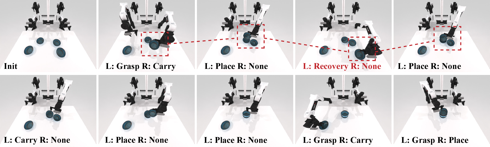
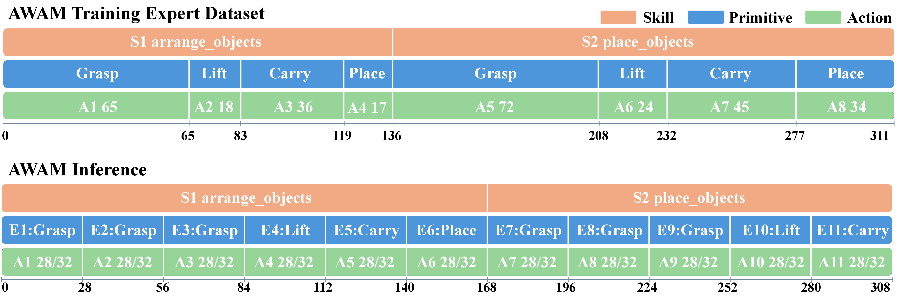
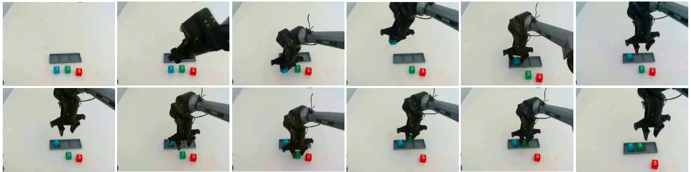

AWAM
Agentic World Action Model
for Embodied Intelligence
From physical foresight
to agentic intelligence.
Reasoning and world modeling, connected through imagination and feedback.
Beyond direct action prediction.
Two brains. A shared physical loop.
TrainingCompare imagined intents against physical outcomes.
InferenceExecute one intent. Reconsider with feedback.
See the action.
Follow every decision.
Three synchronized views. Skills, per-arm primitives, and recovery — aligned on one interactive timeline.
Stack Bowls
Select a timeline segment to inspect its instruction and synchronized camera states. Step playback is a keyframe sequence, not a real-time video.
Compare with the expert demonstration timeline
Expert and AWAM timelines are independently normalized; their positions are not frame-aligned.
Watch this episode’s original execution video
Recover. Replan.
Keep the goal in sight.
A failed placement triggers recovery, then execution continues.
Recovery sequence from the paper

Long tasks.
Composable intelligence.
Task → Skill → Primitive. A shared hierarchy for learning and execution.

Beyond the next action.
Evaluated on RoboDojo, BiCoord, and physical bimanual manipulation.
RoboDojo · comparison in context
Average score ↑
AWAM: paper Table 1. Public baselines: RoboDojo website snapshot, checked September 30, 2026. GPT-6 Astra: RoboDojo evaluation as reproduced in RoboDawn’s comparison. Different training and evaluation harnesses; this is a contextual comparison, not an official AWAM leaderboard entry.
All five capabilities · paper comparison
| Score / SR (%) | Generalization | Precision | Long horizon | Memory | Open | Average |
|---|---|---|---|---|---|---|
| ACT | 0.69 / 0.56 | 0.85 / 0.00 | 1.73 / 0.92 | 1.65 / 0.13 | 0.00 / 0.00 | 0.98 / 0.32 |
| π₀ | 3.94 / 2.56 | 3.56 / 0.75 | 6.19 / 2.00 | 3.47 / 2.11 | 0.25 / 0.25 | 3.48 / 1.53 |
| RDT-1B | 0.56 / 0.33 | 0.38 / 0.00 | 1.13 / 0.00 | 0.49 / 0.33 | 0.00 / 0.00 | 0.51 / 0.13 |
| X-VLA | 10.48 / 6.78 | 18.32 / 12.00 | 16.53 / 9.75 | 4.76 / 3.56 | 0.55 / 0.50 | 10.13 / 6.52 |
| π₀.₅ | 13.37 / 8.17 | 12.40 / 5.50 | 23.54 / 14.67 | 5.78 / 4.56 | 1.98 / 1.67 | 11.41 / 6.91 |
| Spatial Forcing | 14.12 / 9.33 | 17.33 / 10.58 | 23.26 / 14.58 | 5.43 / 4.11 | 1.78 / 1.58 | 12.38 / 8.04 |
| Hy-Embodied-0.5 | 11.77 / 8.39 | 13.81 / 8.00 | 25.74 / 14.92 | 13.37 / 12.11 | 0.65 / 0.58 | 13.07 / 8.80 |
| Fast-WAM | 2.34 / 1.11 | 1.96 / 0.00 | 9.14 / 5.17 | 3.55 / 3.44 | 0.42 / 0.42 | 3.48 / 2.03 |
| GigaWorld-Policy | 5.34 / 2.89 | 6.15 / 1.83 | 15.51 / 8.92 | 3.46 / 2.22 | 0.54 / 0.50 | 6.20 / 3.27 |
| X-WAM | 7.39 / 3.33 | 6.72 / 1.83 | 17.47 / 9.08 | 6.32 / 4.67 | 0.57 / 0.25 | 7.69 / 3.83 |
| OpenWAM | 20.71 / 14.83 | 18.45 / 9.25 | 34.93 / 25.33 | 10.41 / 9.11 | 1.41 / 1.08 | 17.18 / 11.92 |
| AWAM | 18.13 / 11.53 | 14.21 / 6.31 | 40.74 / 29.92 | 25.22 / 21.69 | 2.13 / 1.85 | 20.08 / 14.26 |
BiCoord · bimanual coordination
Average task success rate (%) ↑ · 18 tasks
Table 2 averages are reproduced as reported. AWAM improves success, but uses longer trajectories than π₀ (491 vs. 406).
Explore all 18 tasks · success / stage-wise success / task length
| Task | RDT | OpenVLA-OFT | π₀ | AWAM |
|---|
Each part strengthens the loop.
Grounded in real interaction.
Block stacking and number sorting on Piper X.

30 trials per task and method.
Paper · Table 6